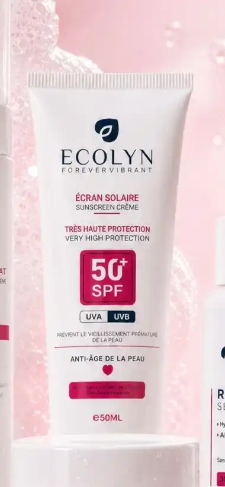

01 · Nettoyerتنظيف
Mousse nettoyanteغسول الوجه
Nettoie la peau en douceur.كينظف البشرة بلطف.
103 DH

Le rituel, à votre mesureروتين على قياسك
Composez librement votre routine avec 1, 2, 3 ou 4 soins. Le meilleur prix de votre combinaison apparaît instantanément.ركّبي روتينك بحرية بمنتج واحد، جوج، ثلاثة أو أربعة. أحسن ثمن لاختيارك كيبان مباشرة.
Créer mon rituelنركّب روتيني01 — L’atelier de votre routine01 — ركّبي روتينك
Touchez simplement les soins qui vous intéressent. Aucun produit n’est présélectionné.ضغطي غير على المنتجات اللي بغيتي. ما كاين حتى منتج مختار مسبقاً.
01 · Nettoyerتنظيف
Nettoie la peau en douceur.كينظف البشرة بلطف.
02 · Hydraterترطيب
Aide à préserver le confort cutané.كيساعد يحافظ على راحة البشرة.
03 · Ciblerعناية مركزة
Complète la routine avec une étape ciblée.كيكمل الروتين بعناية مركزة.

04 · Protégerحماية
Protège la peau des rayons UV.كيحمي البشرة من الأشعة فوق البنفسجية.
Le geste ECOLYN · 01خطوة إيكولين · 01
Une texture, un moment, puis la régularité. La vidéo se révèle naturellement à votre passage.قوام، لحظة عناية، ومن بعد الاستمرار. الفيديو كيبان بوحدو ملي توصلي ليه.
02 — Une évolution réelle02 — تطور حقيقي


Cette participante présentait des boutons visibles sur le visage. Après avoir expliqué sa situation et ajusté certaines habitudes de sa routine selon les conseils reçus, elle a observé cette évolution.
كانت هاد المشاركة كتعاني من حبوب باينة فالوجه. من بعد ما شرحات الحالة ديالها وبدلات بعض العادات فالروتين حسب النصائح اللي خذات، لاحظات هاد التطور.
Résultats individuels : l’évolution peut varier d’une personne à l’autre. Cette histoire ne permet pas d’attribuer à elle seule l’évolution aux produits ECOLYN.النتائج فردية وقد تختلف من شخص لآخر. هاد التجربة بوحدها ما كتثبتش أن التطور سبابو منتجات إيكولين.La matière · 02القوام · 02
Regardez la matière et choisissez seulement les étapes qui correspondent à votre envie de routine.شوفي القوام واختاري غير الخطوات اللي بغيتي تكون فروتينك.
La formule avant le parfumالتركيبة قبل العطر
01Pas de forte odeur parfuméeما فيهاش ريحة عطرية قويةNous préférons laisser la formule parler plutôt que masquer l’expérience derrière une forte odeur cosmétique.كنفضلو نخليو التركيبة تبان بلا ما نغطيو التجربة بريحة تجميلية قوية.
02Une perception qui peut varierالإحساس بالريحة كيقدر يختلفL’odeur perçue peut être légère, neutre ou provenir directement des ingrédients de la formule.الريحة اللي كتحسي بها تقدر تكون خفيفة، محايدة أو جاية من مكونات التركيبة.
03Une composition à consulterالمكونات متاحة للمراجعةEn cas de sensibilité connue, vérifiez toujours la liste INCI avant usage.إلا كانت عندك حساسية معروفة، راجعي ديما لائحة المكونات قبل الاستعمال.
L’expérience · 03التجربة · 03
Chaque produit peut vivre seul ou rejoindre les autres dans votre sac beauté.كل منتج تقدري تستعمليه بوحدو ولا تجمعيه مع الآخرين فحقيبتك.
Des voix réellesتجارب حقيقية
Des témoignages audio existants, à écouter uniquement si vous le souhaitez. Ils ne constituent pas une garantie de résultat.تجارب صوتية حقيقية كتسمعيها إلا بغيتي. ماشي ضمانة لنفس النتيجة.


 Conseil privéنصيحة خاصة
Conseil privéنصيحة خاصةUne question avant de choisir ?عندك سؤال قبل الاختيار؟
Écrivez-lui avant de composer votre routine. Ce bouton mène à la conversation privée, pas au groupe.كتبي ليها قبل ما تركبي الروتين. هاد الزر كيمشي للمحادثة الخاصة، ماشي للمجموعة.
✆ Parler à Hananeنهضر مع حنانFAQ
Oui. Votre routine peut contenir de 1 à 4 produits.نعم. تقدري تختاري من منتج واحد حتى لأربعة.
Chaque combinaison a son tarif promotionnel. Le total se met à jour dès que vous ajoutez ou retirez un produit.كل تركيبة عندها الثمن الترويجي ديالها، والمجموع كيتبدل تلقائياً.
Vous payez à la livraison après confirmation de votre commande.كتخلصي عند الاستلام من بعد تأكيد الطلب.
Non. La date de fin est globale et configurée par ECOLYN.لا. تاريخ النهاية عام وكتحددو إيكولين.
Le rituel complet · 04الروتين الكامل · 04
Un repère visuel pour découvrir l’ordre du rituel complet. Vous restez libre de choisir 1, 2 ou 3 produits.

دليل بصري باش تعرفي ترتيب الروتين الكامل. وباقي عندك الحرية تختاري منتج، جوج ولا ثلاثة.

Votre rituel commence iciروتينك كيبدا هنا